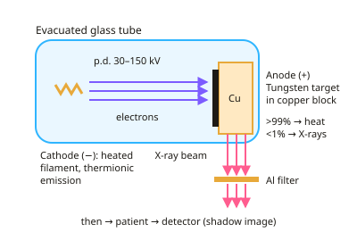

A-level Physics Year 13 · Topic 17
Medical imaging
Medical imaging is about seeing inside the body without surgery, and using radiation to treat disease.
We will see how X-rays are made and absorbed, and how CT, ultrasound, MRI and endoscopes build their images.
Then we study radioactive tracers, gamma cameras and PET, radiotherapy doses, and how to weigh up benefits against risks.
- 8 subtopics
- 329 questions
- Free: 17.1 notes and 10 questions
In this topic
- 17.1X-ray production and imagingFree below · 32 questions
- 17.2X-ray attenuation, contrast media and computed tomographyOpen in Full Marks · 28 questions
- 17.3Ultrasound imaging: A- and B-scans, acoustic impedance and DopplerOpen in Full Marks · 66 questions
- 17.4Magnetic resonance imagingOpen in Full Marks · 27 questions
- 17.5Fibre optics and endoscopyOpen in Full Marks · 37 questions
- 17.6Radionuclide imaging: tracers, gamma camera and PETOpen in Full Marks · 29 questions
- 17.7Radiotherapy, radiation dose and effective half-lifeOpen in Full Marks · 71 questions
- 17.8Comparing medical imaging techniques: benefits and risksOpen in Full Marks · 39 questions
17.1 · Free notes
X-ray production and imaging

Key points
- X-rays are high-energy electromagnetic radiation (wavelength about 10⁻⁹ to 10⁻¹² m). They are produced when fast electrons decelerate in a metal target.
- In the tube, a heated filament (cathode) releases electrons by thermionic emission. A high tube p.d. (typically 30–150 kV) accelerates them across an evacuated tube to the anode.
- The target is tungsten (high melting point, high atomic number) set in a copper block. Over 99% of the electrons' kinetic energy becomes heat, so the anode is rotated and cooled (oil or water, copper conducts heat away).
- The continuous spectrum (bremsstrahlung) comes from electrons decelerating in the field of target nuclei. It has a sharp cut-off at λmin = hc/eV, and the maximum photon energy is eV.
- The characteristic line spectrum appears when an incoming electron ejects an inner-shell electron and an outer electron falls into the vacancy. The photon energy equals the energy-level difference, so the lines depend on the target material, not the tube p.d.
- Tube current (set by filament heating) controls the number of electrons, and so the intensity of the beam. Tube p.d. controls the maximum photon energy, and so the penetrating power (hardness) of the beam.
- An aluminium filter removes low-energy ('soft') X-rays. The patient would absorb these, raising the dose, but they would not reach the detector to help form the image.
- The image is a 2D shadow (radiograph). Bone attenuates more than soft tissue and air, so the detector (film or digital CCD/flat panel) receives a different intensity from each tissue.
- Sharpness is improved by a small focal spot, a collimator, and placing the patient close to the detector. Contrast is improved by a lead anti-scatter grid that absorbs scattered X-rays.
- A fluorescent intensifying screen converts each X-ray photon into many visible photons. This allows a shorter exposure and a lower dose.
- X-rays are ionising, so exposure risks cell damage and cancer. Doses must be as low as reasonably practicable, and the benefit to the patient must outweigh the risk.
In more detail
- Worked maximum energy: at 80 kV the most energetic photon has 80 keV = 1.28 × 10⁻¹⁴ J → λ_min = hc ÷ E = 1.99 × 10⁻²⁵ ÷ 1.28 × 10⁻¹⁴ = 1.6 × 10⁻¹¹ m.
- Worked electron flow: a tube current of 10 mA means 0.010 ÷ 1.6 × 10⁻¹⁹ = 6.3 × 10¹⁶ electrons hit the target every second.
- Worked heating: about 1% of the beam's energy becomes X-rays; at 80 kV and 10 mA, 800 W goes in, about 8 W comes out as X-rays and the rest heats the anode, so it rotates and is cooled.
- Changing the spectrum: raising kV raises both the maximum photon energy and the intensity; raising mA raises only the intensity; the line positions depend only on the target metal.
Practice
X-ray production and imaging: 10 questions
Pick an answer to check it, or open the answer for the explanation.
1. In a diagnostic X-ray tube, roughly what fraction of the electrons' kinetic energy is converted into X-ray photons?
- About 99%
- About 50%
- About 10%
- About 1% or less
Show answer
D: About 1% or less. Over 99% of the energy becomes heat in the target. That is why the anode needs a high melting point, a copper block to conduct heat away, and often rotation.
2. The filament current in an X-ray tube is increased with the tube p.d. unchanged. What happens to the X-ray beam?
- Greater intensity and greater maximum photon energy
- Greater intensity; same maximum photon energy
- Lower intensity; smaller minimum wavelength
- Same intensity; greater maximum photon energy
Show answer
B: Greater intensity; same maximum photon energy. A larger filament current releases more electrons per second, so more photons are produced. The maximum photon energy is eV, which depends only on the p.d.
3. What causes the sharp peaks in the X-ray spectrum from a tungsten target?
- Outer-shell electrons dropping into inner-shell vacancies
- Electrons decelerating near target nuclei
- Thermionic emission at the filament
- Photons scattering in the aluminium filter
Show answer
A: Outer-shell electrons dropping into inner-shell vacancies. An incident electron ejects an inner-shell electron. When an outer electron falls into the vacancy, it emits a photon of fixed energy characteristic of the target.
4. Why is a thin aluminium filter placed in the beam before it reaches the patient?
- To remove high-energy X-rays so the beam is safer
- To increase the intensity reaching the film
- To remove low-energy X-rays that the patient would absorb without aiding the image
- To absorb X-rays scattered inside the patient
Show answer
C: To remove low-energy X-rays that the patient would absorb without aiding the image. Low-energy X-rays are almost entirely absorbed by the patient. They add to the dose but never reach the detector, so removing them reduces dose without losing image quality.
5. Why do many high-power X-ray tubes use a rotating anode?
- To increase the p.d. across the tube
- To focus electrons to a smaller spot
- To make the X-rays monochromatic
- To spread the heat over a larger area of the target
Show answer
D: To spread the heat over a larger area of the target. Over 99% of the beam energy becomes heat. Rotation means the electron beam strikes a different part of the target continuously, so the heat is spread over a larger area.
6. The p.d. across an X-ray tube is doubled from 60 kV to 120 kV. What happens to the minimum wavelength of the X-rays?
- It halves
- It is unchanged
- It falls to a quarter
- It doubles
Show answer
A: It halves. λmin = hc/eV, so λmin is inversely proportional to V. Doubling V halves λmin.
7. Which change would give a sharper radiograph?
- Using a larger focal spot on the target
- Removing the collimator
- Moving the patient closer to the detector
- Moving the patient closer to the X-ray tube
Show answer
C: Moving the patient closer to the detector. Placing the patient close to the detector, and using a small source, reduces the geometric blurring (penumbra) at the edges of structures.
8. What is the purpose of a lead anti-scatter grid between the patient and the detector?
- It removes low-energy X-rays from the primary beam
- It absorbs scattered X-rays, improving image contrast
- It increases the intensity of the primary beam
- It converts X-rays into visible light
Show answer
B: It absorbs scattered X-rays, improving image contrast. Scattered photons travel in the wrong direction and fog the image. The grid's lead strips absorb them, while the primary beam passes through the gaps.
9. Why is a fluorescent intensifying screen used with photographic film?
- Each X-ray photon produces many visible photons, so a lower dose is needed
- It filters out soft X-rays
- It absorbs scattered X-rays
- It increases sharpness by reducing the focal spot
Show answer
A: Each X-ray photon produces many visible photons, so a lower dose is needed. The screen fluoresces, turning each X-ray photon into many light photons that expose the film. Less X-ray exposure is needed, so the dose is lower.
10. A tungsten tube's p.d. is raised from 90 kV to 120 kV. The characteristic peaks stay at the same wavelengths. Why?
- They depend on the filament current only
- They depend on the electron energy levels of the target atoms
- They are produced by the aluminium filter
- They are fixed by the tube's glass window
Show answer
B: They depend on the electron energy levels of the target atoms. Characteristic lines come from transitions between fixed energy levels in tungsten. Only the continuous spectrum's cut-off and intensity change with p.d.
Keep going in Full Marks
Full Marks has 32 questions on X-ray production and imaging (22 more than here), set out in practice levels. You also get notes and 3D models for all 8 subtopics of Medical imaging, plus games, timed exams and past papers.
On your exam board
- AQATopic 10: Option: Medical physics
- OCR ATopic 6.5: Medical imaging
- OCR BTopic 6.3: Ionising radiation and risk
- CambridgeTopic 24: Medical physics
Not in the Edexcel specification.